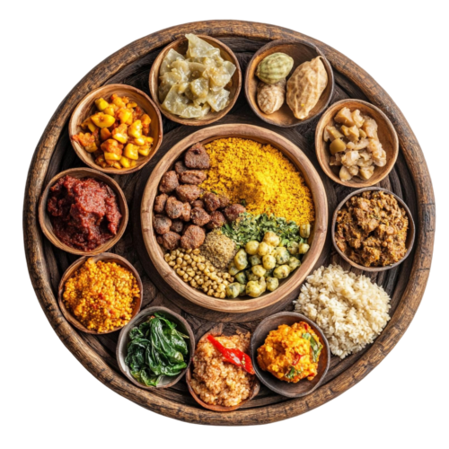

Find Your
Taste!
Hi, I’m Manav, a 17-year-old student currently in 12th grade. I’ve created QuickBite, a simple and smart Recipe Finder website where you can discover delicious recipes quickly and

